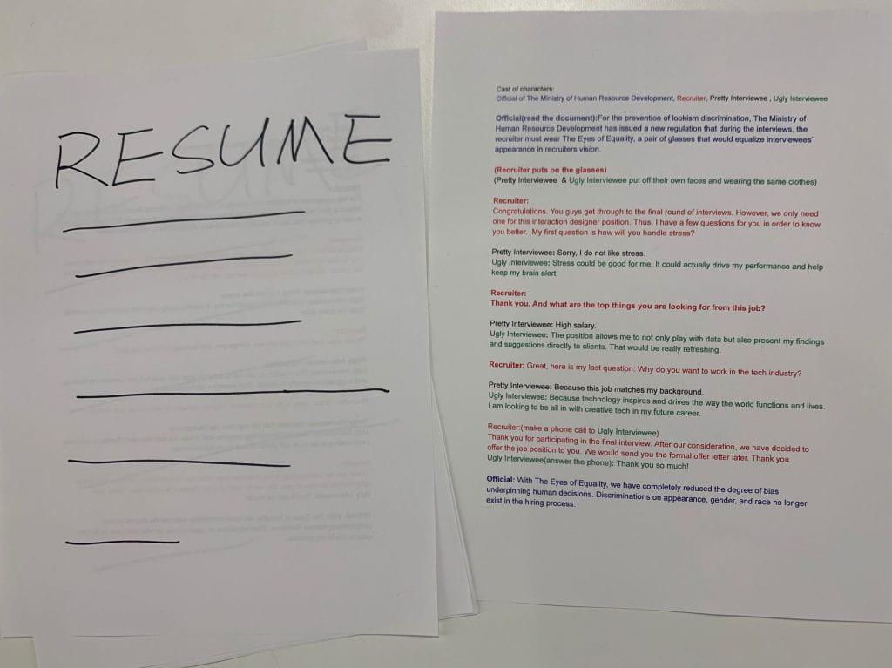
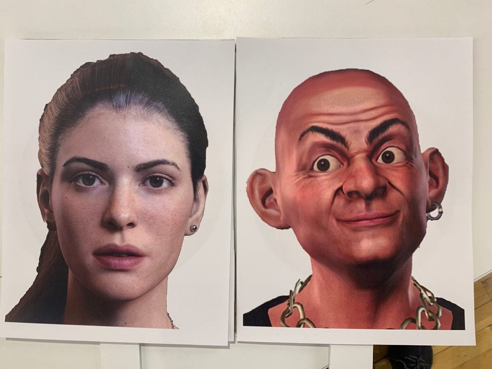

Play - Eye of Equality
WEEK 3 - MON, FEB 3RD, 2020team with Xueyi Zhang
There are many biases at play in the workplace, which account for the unmeritocratic or unfair advantage that some groups have over others, irrespective of their actual talent or potential: sexism, racism, and ageism, to name just a few. One of the most prominent biases is hardly ever discussed or acknowledged, namely the beauty bias — also known as “lookism.”
As a comprehensive academic review summarized: “Physically attractive individuals are more likely to be interviewed for jobs and hired, they are more likely to advance rapidly in their careers through frequent promotions, and they earn higher wages than unattractive individuals.”
After last week’s consideration, we researched more of appearance-based discrimination. We have decided to present the prototype of “Eyes of Equality” glass and simulate the interview scenario with the glass.
The Eyes of Equality, a pair of glasses with sound filter that would equalize interviewees’ appearance in recruiter's vision and equalize voices in recruiter's hearing.
Materials for the play
Computer-generated faces
Prototype --- Eye of Equality